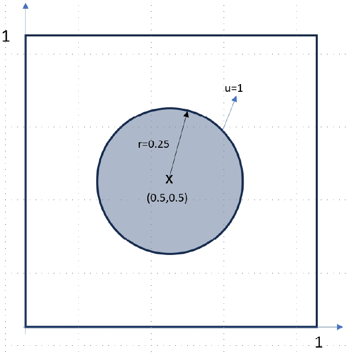
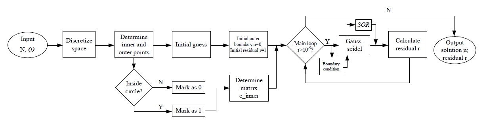
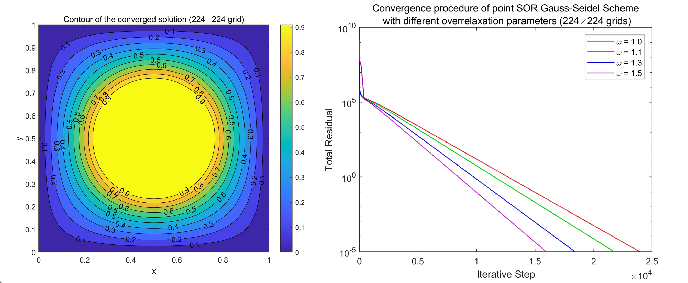
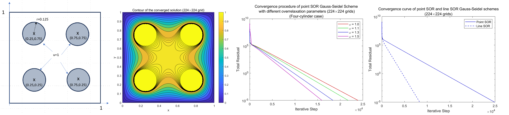

SOR Gauss-Seidel Solver for the 2D Laplace Equation
Course: Numerical Methods
Instructor: Rajat Mittal
View PDF of Final Report (MATLAB Code Included)
This project focuses on solving the two-dimensional Laplace equation within a defined computational domain featuring an inner boundary set to 𝑢=1 and an outer boundary set to 𝑢=0. Utilizing a second-order central difference scheme for spatial discretization, the study implements the Successive Over-Relaxation (SOR) Gauss-Seidel method to iteratively solve the resulting linear system. Both Point- and Line-SOR Gauss-Seidel variants are explored to assess their convergence behaviors and computational efficiencies across various grid resolutions, ranging from 32×32 to 224×224 grid cells.


Initial investigations reveal that increasing grid resolution significantly enhances the accuracy and refinement of the numerical solutions. However, this improvement needs a greater number of iterative steps and results in higher computational time to achieve convergence. To address these challenges, the optimal relaxation parameter 𝜔 is determined for each grid size. This optimization effectively accelerates convergence rates without compromising the stability of the solver. Additionally, to ensure the solver's accuracy, a theoretical solution to radial symmetry case is employed. The comparison between the numerical results and the exact analytical solution through root mean square error analyses confirms that the solver achieves second-order convergence. This validation underscores the reliability and precision of the SOR Gauss-Seidel method implemented in this project.

Further complexity is introduced by configuring the domain with four circular inner boundaries, highlighting the solver's capability to handle complex geometries. Comparative analyses between Point- and Line-SOR Gauss-Seidel methods reveal that the Line-SOR results display faster convergence rates with fewer iteration steps.
